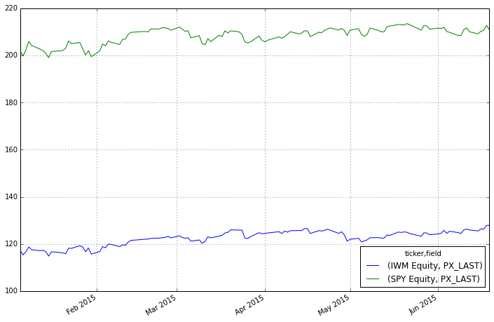

This is a simple introduction to pdblp, a wrapper for easy Bloomberg and pandas integration
%pylab inline
import pdblp
Populating the interactive namespace from numpy and matplotlib
The project pdblp borrows heavily from the package by kyuni22, which is available here.
The package currently wraps the Historical Data Request service and the Intraday Bar Request service. More details of the Open API can be found here
Before running this notebook you need to have access to a Bloomberg terminal on a windows machine and download and install pdblp
git clone https://github.com/MatthewGilbert/pdblp.git
cd pdblp
pip install -e pdblp
con = pdblp.BCon(debug=False)
con.start()
print(con.bdh.__doc__)
Get tickers and fields, return pandas dataframe with column MultiIndex
of tickers and fields
Parameters
----------
tickers: {list, string}
String or list of strings corresponding to tickers
flds: {list, string}
String or list of strings corresponding to FLDS
start_date: string
String in format YYYYmmdd
end_date: string
String in format YYYYmmdd
df = con.bdh(['SPY Equity', 'IWM Equity'], 'PX_LAST', '20150103', '20150619')
df.head()
| ticker | IWM Equity | SPY Equity |
|---|---|---|
| field | PX_LAST | PX_LAST |
| 2015-01-05 | 117.34 | 201.72 |
| 2015-01-06 | 115.31 | 199.82 |
| 2015-01-07 | 116.73 | 202.31 |
| 2015-01-08 | 118.71 | 205.90 |
| 2015-01-09 | 117.57 | 204.25 |
df.plot(figsize=(12,8))
<matplotlib.axes._subplots.AxesSubplot at 0xb62a828>

The bdh() function call returns a MultiIndex by default to be a consistent type in case multiple fields are requested
df2 = con.bdh(['SPY Equity', 'IWM Equity'], ['PX_LAST', 'VOLUME'], '20150103', '20150619')
df2.head()
| ticker | IWM Equity | SPY Equity | ||
|---|---|---|---|---|
| field | PX_LAST | VOLUME | PX_LAST | VOLUME |
| 2015-01-05 | 117.34 | 51141891 | 201.72 | 169632646 |
| 2015-01-06 | 115.31 | 67446040 | 199.82 | 209151408 |
| 2015-01-07 | 116.73 | 32252095 | 202.31 | 125346709 |
| 2015-01-08 | 118.71 | 28361730 | 205.90 | 147217784 |
| 2015-01-09 | 117.57 | 26975175 | 204.25 | 158567288 |
print(con.bdib.__doc__)
Get Open, High, Low, Close, Volume, for a ticker.
Return pandas dataframe
Parameters
----------
ticker: string
String corresponding to ticker
startDateTime: string
UTC datetime in format YYYY-mm-ddTHH:MM:SS
endDateTime: string
UTC datetime in format YYYY-mm-ddTHH:MM:SS
eventType: string {TRADE, BID, ASK, BID_BEST, ASK_BEST, BEST_BID,
BEST_ASK}
Requested data event type
interval: int {1... 1440}
Length of time bars
df3 = con.bdib('SPY Equity', '2015-06-19T09:30:00', '2015-06-19T15:30:00',
eventType='TRADE', interval=15)
df3.head()
| open | high | low | close | volume | |
|---|---|---|---|---|---|
| 2015-06-19 13:30:00 | 211.460 | 211.520 | 211.090 | 211.3573 | 9061632 |
| 2015-06-19 13:45:00 | 211.360 | 211.405 | 211.100 | 211.3600 | 4212470 |
| 2015-06-19 14:00:00 | 211.350 | 211.550 | 211.320 | 211.4299 | 3659095 |
| 2015-06-19 14:15:00 | 211.430 | 211.550 | 211.325 | 211.4550 | 2186267 |
| 2015-06-19 14:30:00 | 211.459 | 211.520 | 211.260 | 211.3300 | 2352812 |
Simple typos can result in somewhat cryptic errors since the service returns a well format response which fails far downstream when a pandas object is attempted to be instantiated, as can be seen below.
con.bdh('SPY Equitys', 'PX_LAST', '20150103', '20150619')
---------------------------------------------------------------------------
TypeError Traceback (most recent call last)
<ipython-input-12-fbd4efd0f296> in <module>()
----> 1 con.bdh('SPY Equitys', 'PX_LAST', '20150103', '20150619')
c:\users\matthew\sandbox\pdblp\pdblp\pdblp.pyc in bdh(self, tickers, flds, start_date, end_date, periodselection)
126 data = DataFrame(data)
127 data.columns = pd.MultiIndex.from_tuples(
--> 128 data, names=['ticker', 'field']
129 )
130 data.index = pd.to_datetime(data.index)
C:\Anaconda\lib\site-packages\pandas\core\index.pyc in from_tuples(cls, tuples, sortorder, names)
3521 if len(tuples) == 0:
3522 # I think this is right? Not quite sure...
-> 3523 raise TypeError('Cannot infer number of levels from empty list')
3524
3525 if isinstance(tuples, (np.ndarray, Index)):
TypeError: Cannot infer number of levels from empty list
There is a debug flag which prints the request/response to stdout so this type of error can be easily found.
con.debug = True
con.bdh('SPY Equitys', 'PX_LAST', '20150103', '20150619')
DEBUG:root:Sending Request:
HistoricalDataRequest = {
securities[] = {
"SPY Equitys"
}
fields[] = {
"PX_LAST"
}
periodicityAdjustment = ACTUAL
periodicitySelection = DAILY
startDate = "20150103"
endDate = "20150619"
}
DEBUG:root:Message Received:
HistoricalDataResponse = {
securityData = {
security = "SPY Equitys"
eidData[] = {
}
sequenceNumber = 0
securityError = {
source = "809::bbdbh6"
code = 15
category = "BAD_SEC"
message = "Unknown/Invalid securityInvalid Security [nid:809] "
subcategory = "INVALID_SECURITY"
}
fieldExceptions[] = {
}
fieldData[] = {
}
}
}
---------------------------------------------------------------------------
TypeError Traceback (most recent call last)
<ipython-input-14-fbd4efd0f296> in <module>()
----> 1 con.bdh('SPY Equitys', 'PX_LAST', '20150103', '20150619')
c:\users\matthew\sandbox\pdblp\pdblp\pdblp.pyc in bdh(self, tickers, flds, start_date, end_date, periodselection)
126 data = DataFrame(data)
127 data.columns = pd.MultiIndex.from_tuples(
--> 128 data, names=['ticker', 'field']
129 )
130 data.index = pd.to_datetime(data.index)
C:\Anaconda\lib\site-packages\pandas\core\index.pyc in from_tuples(cls, tuples, sortorder, names)
3521 if len(tuples) == 0:
3522 # I think this is right? Not quite sure...
-> 3523 raise TypeError('Cannot infer number of levels from empty list')
3524
3525 if isinstance(tuples, (np.ndarray, Index)):
TypeError: Cannot infer number of levels from empty list